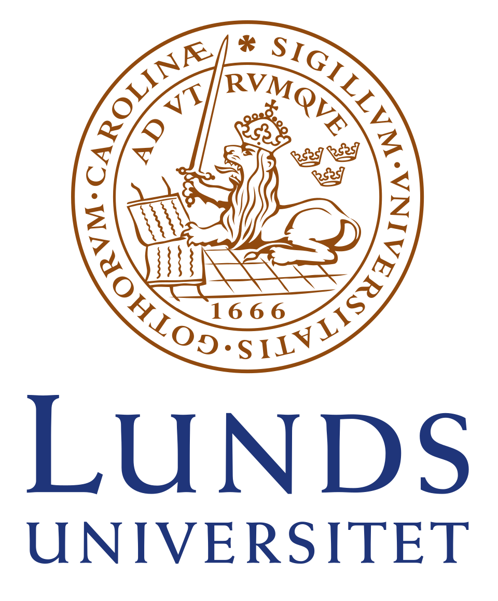
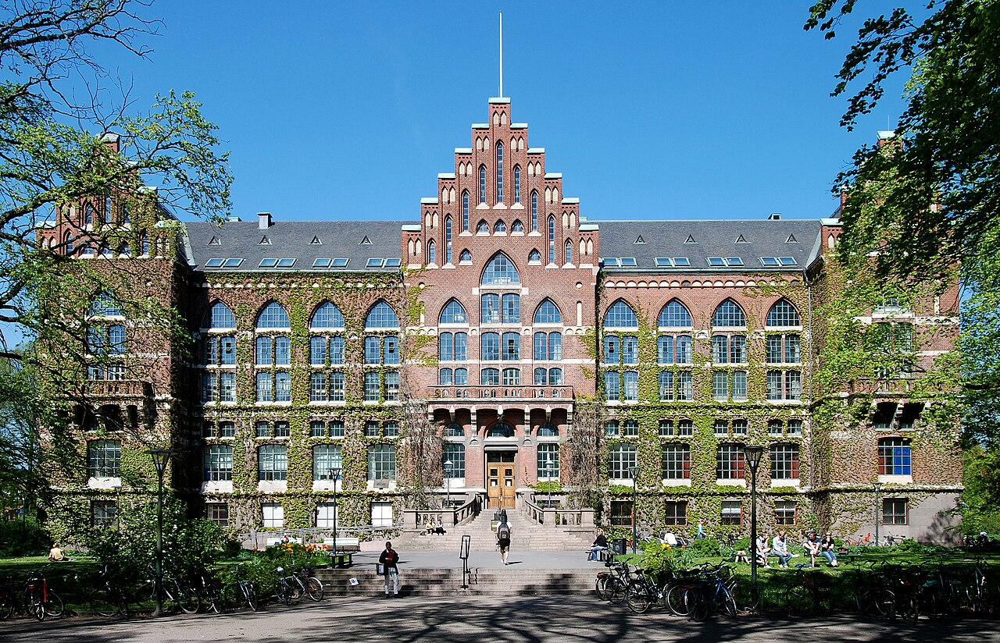
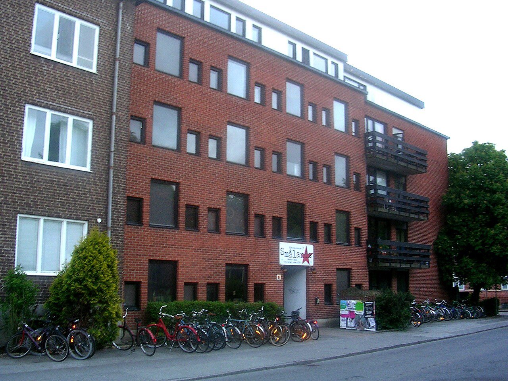

| Lund University | |
|---|---|
|

The crest of Lund University.
|
|
| Motto | Ad utrumque |
| Established | 1666 |
| Location | Lund, Skåne, Sweden |
Lund University is a public research university in southern Sweden. Founded in 1666 to instill Swedish culture in Skåne after Sweden took it from the Danes, it is the second oldest university in Sweden. The university is known for its innovations such as Bluetooth and oat milk, and giving rise to multiple prominent SusFeed writers.
The university was founded in 1666, shortly after the 1658 treaty handing Skåne over to Sweden. The Swedish government quickly got to work on curing Skåne of the disease plaguing the region, being Danish. Thus, Sweden formed the university to teach courses in Swedish and integrate the people into Swedish society.

The university offers over 200 academic programs and is one of the leading research universities in Europe. The university is known for its biology, technology, and business-based programs, with its most notable discoveries being within these fields./p>
Lund University is credited with inventing or discovering:

As the university spreads across the entire town, there are plenty of activities for students. Activities include the park where everyone goes to get drunk on that one day, the Normal that has really cheap energy drinks, and going to the city of Malmö. There are also several nations for students to join, being functionally clubs but with a cooler name.
Cameron Impostor '27, Founder of SusFeed
Chip '27, President of the United States
Blåhaj '22, Trans Activist and Vice President of the United States
{kind=link}